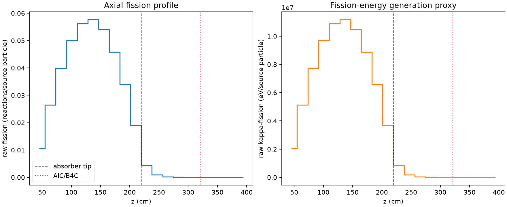
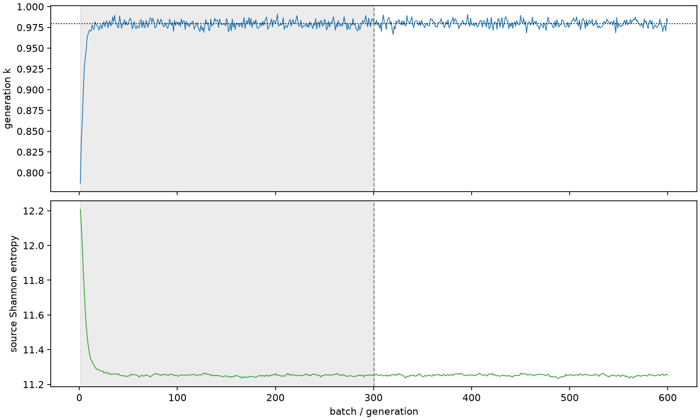

| field | value |
|---|---|
| experiment | V2-STAGE_32_OGRENCI_03-0007 |
| k | 0.9794820655253998 |
| MC standard error | 0.00016768727260100454 |
| seconds | 967.6905932629998 |
| acceptance | not_assessed |
| convergence | review_required |
Completed is output integrity only; physical and statistical review required. Zero tallies do not prove zero production or zero uncertainty.
| diagnostic | value |
|---|---|
| geometric fuel voxels | 5280 |
| zero fission tally voxels | 750 |
| low signal fuel voxels | 1622 |
| low signal fission share | 6.095519083662165e-05 |
| low signal kappa share | 6.09775335003434e-05 |
| important fission share | 0.9501464427267102 |
| previous filter included | 3658 |
| duration estimate s | 1562.5173488400023 |
| actual minus estimate s | -594.8267555770026 |
| fission relative MC error | statistics |
|---|---|
| all_geometric_fuel | {"voxels": 5280, "positive_mean_voxels": 4530, "zero_mean_voxels": 750, "undefined_relative_error_voxels": 750, "median": 0.010482431912661544, "p95": 0.8253518133052983, "maximum": 1.0000000000000002} |
| low_signal | {"voxels": 1622, "positive_mean_voxels": 872, "zero_mean_voxels": 750, "undefined_relative_error_voxels": 750, "median": 0.5630375385166092, "p95": 1.0, "maximum": 1.0000000000000002} |
| important_95pct | {"voxels": 2323, "positive_mean_voxels": 2323, "zero_mean_voxels": 0, "undefined_relative_error_voxels": 0, "median": 0.006787290004562658, "p95": 0.010231986414018897, "maximum": 0.01228778383591921} |
| outside_previous_filter | {"voxels": 1622, "positive_mean_voxels": 872, "zero_mean_voxels": 750, "undefined_relative_error_voxels": 750, "median": 0.5630375385166092, "p95": 1.0, "maximum": 1.0000000000000002} |
| kappa_fission relative MC error | statistics |
|---|---|
| all_geometric_fuel | {"voxels": 5280, "positive_mean_voxels": 4530, "zero_mean_voxels": 750, "undefined_relative_error_voxels": 750, "median": 0.01046924928721618, "p95": 0.8251883998750619, "maximum": 1.0000000000000002} |
| low_signal | {"voxels": 1622, "positive_mean_voxels": 872, "zero_mean_voxels": 750, "undefined_relative_error_voxels": 750, "median": 0.5621870027847344, "p95": 1.0, "maximum": 1.0000000000000002} |
| important_95pct | {"voxels": 2323, "positive_mean_voxels": 2323, "zero_mean_voxels": 0, "undefined_relative_error_voxels": 0, "median": 0.0067788170346608275, "p95": 0.010219480264487784, "maximum": 0.012270788836542262} |
| outside_previous_filter | {"voxels": 1622, "positive_mean_voxels": 872, "zero_mean_voxels": 750, "undefined_relative_error_voxels": 750, "median": 0.5621870027847344, "p95": 1.0, "maximum": 1.0000000000000002} |
| axial bin | fission share | kappa-fission share |
|---|---|---|
| 1 | 0.026647785451512567 | 0.026649125849510322 |
| 2 | 0.06627378554786521 | 0.06627330662283012 |
| 3 | 0.1000368066533476 | 0.1000360309158066 |
| 4 | 0.1252946735362964 | 0.12529353472672702 |
| 5 | 0.14071609106265423 | 0.14071464139427384 |
| 6 | 0.14434421966510755 | 0.14434306841214983 |
| 7 | 0.1353032586267372 | 0.1353023519145643 |
| 8 | 0.11475122689878692 | 0.11475054770404175 |
| 9 | 0.08504664838882578 | 0.0850460613108736 |
| 10 | 0.04765314863449387 | 0.04765320266013483 |
| 11 | 0.010773203084478766 | 0.010777410951916191 |
| 12 | 0.0024024268482869377 | 0.002403599429256542 |
| 13 | 0.0005772870945992334 | 0.0005776035464819634 |
| 14 | 0.0001379958677648164 | 0.00013805643461055206 |
| 15 | 3.164189944525223e-05 | 3.165406261108829e-05 |
| 16 | 8.403389729113684e-06 | 8.405558501576331e-06 |
| 17 | 1.2027518003060148e-06 | 1.2039555174609506e-06 |
| 18 | 1.944187874392899e-07 | 1.9437097240060155e-07 |
| 19 | 1.7948074278796384e-10 | 1.792198348046312e-10 |
| 20 | 0.0 | 0.0 |
Histories include the inactive-to-active transition at batch 300. kappa-fission approximates fission energy production, not total heat deposition.

